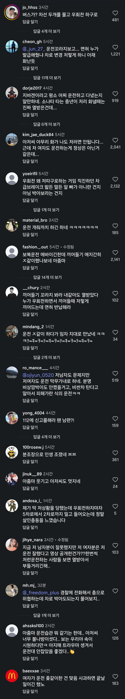

180 · 4 · 9 시간 전 · 원문

그런데
분위기는
보복운전한 남성보다
원인제공한 지바겐 차주가 더 안좋음
운전 뭐같이 하다가 제대로 임자만남
수집 당시 댓글 4개
님금임은벗거벌 · 2 시간 전
저래 당해도 지가 뭔 잘못 했는지 모르겠지...
핫둘셋넷 · 1 시간 전
남편이 제일 곤란할듯 끼리끼리면 다행인데 내가 남편이였으면 우쭈쭈 무서웠쪄 못해주고 우회전을 왜 그렇게 했어? 못참을듯..
아기밥통 · 40 분 전
ㄹㅇ 본문처럼 운전 개 좆같이 하다 임자 만났네 ㅋㅋㅋㅋㅋㅋㅋㅋㅋㅋㅋㅋㅋㅋㅋㅋㅋㅋㅋ
미래를구원하는길 · 31 분 전
좆같이 운전하는 건 객기부리는 거나 마찬가지고, 객기부리면 임자 만날 각오는 해야지.
댓글
수집 당시 댓글 4개
님금임은벗거벌 · 2 시간 전
저래 당해도 지가 뭔 잘못 했는지 모르겠지...
핫둘셋넷 · 1 시간 전
남편이 제일 곤란할듯 끼리끼리면 다행인데 내가 남편이였으면 우쭈쭈 무서웠쪄 못해주고 우회전을 왜 그렇게 했어? 못참을듯..
아기밥통 · 40 분 전
ㄹㅇ 본문처럼 운전 개 좆같이 하다 임자 만났네 ㅋㅋㅋㅋㅋㅋㅋㅋㅋㅋㅋㅋㅋㅋㅋㅋㅋㅋㅋ
미래를구원하는길 · 31 분 전
좆같이 운전하는 건 객기부리는 거나 마찬가지고, 객기부리면 임자 만날 각오는 해야지.